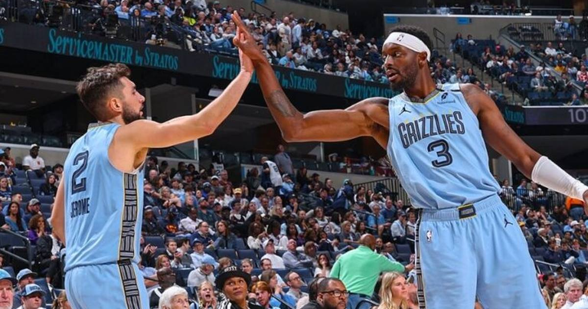

Grizzlies tie an NBA record — 10 players in double figures in a 142-111 rout of the Pelicans
Ten Grizzlies scored in double figures in a 142-111 rout of New Orleans — matching an NBA record — with Jerami Grant's 22 off the bench leading a night where the Memphis bench outscored the Pelicans' reserves 76-27.

Disclosure: this post contains affiliate links. I earn a commission on qualifying purchases.
The night
Nobody had to carry the Grizzlies on Friday night, because everybody did. Ten Memphis players scored in double figures in a 142-111 rout of the New Orleans Pelicans at Smoothie King Center — matching an NBA record — in an NBA Cup game that was decided by depth as much as anything else.
Jerami Grant led the way with a season-high 22 off the bench, shooting 7-for-10 from the field. Ty Jerome added 17 points and nine assists. Cedric Coward, GG Jackson and Cam Spencer scored 14 apiece; Isaiah Stewart and Cam Boozer had 12 each; Jaylen Wells added 11; and Taylor Hendricks (10 points, 12 rebounds) and Javon Small (10) rounded out the group. The bench outscored New Orleans' reserves 76-27.
Memphis shot 18-for-45 from three and held the Pelicans to 7-for-31. The Grizzlies improved to 8-4, and to 6-0 on the road — the best road start in franchise history and the best road record in the league.
The history
The record of 10 players in double figures has been tied before, but rarely, and never casually. The most recent team to do it was Miami, which put 10 in double figures against these same Pelicans in April 2025, in a 153-104 win that set the Heat's franchise scoring record. Before that, you have to go back to 1994, when the Phoenix Suns did it against the Clippers.
New Orleans, for its part, is going the other way. The Pelicans fell to 4-9 with a fifth straight loss, and they have now allowed at least 138 points in four straight games. Saddiq Bey's 30 points and 10 rebounds — both season highs — were the first 30-point night by a Pelican all season, and it still wasn't close.
What's next
Memphis is 1-1 in West Group B of the NBA Cup and hosts Brooklyn on Saturday night. The depth that produced this record is the same depth that has them unbeaten on the road — and if ten guys can all get theirs on the same night, the Grizzlies are a problem no game plan accounts for.
Gear up: Fanatics